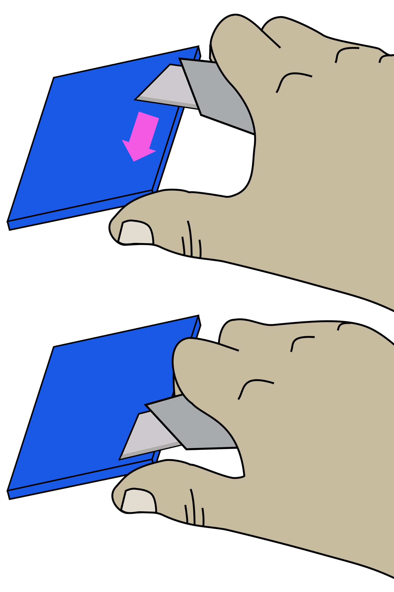

3D Printing Plastic Parts
Step 1: Setting printing parameters
All parts can be printed using PLA filament on one of the RepRap-style printers such as the Prusa i3 MK3S
The following parameters are recommended for printing:
| Setting | Option |
|---|---|
| Material | PLA |
| Color | Negro |
| Temperature | Recommended for PLA |
| Layer Height | 0.2mm, 0.1mm (for parts with threads) |
Step 2: 3D Print
You can download all the models in STL format in a single zipfile file 3D models.
Step 3: Cleaning printed parts
Be careful when removing edges: To avoid injury, first remove most of the edge without a knife. Remove the remaining edge with a peeling action as described below.
Carefully remove the print border from all pieces.
- Use precision wire cutters to remove most of the edge of the piece.
-
Clean the remaining edge with a razor:
2.1 Hold the knife in your dominant hand with 4 fingers wrapped around the handle, leaving the thumb free.
2.2 Hold the piece with your other hand, as far away from the surface to be cut as possible.
2.3 Support the part with the thumb of your dominant hand.
2.4 Place the blade on the surface to be cut, and carefully close the dominant hand, moving the blade, under control, towards the thumb. 